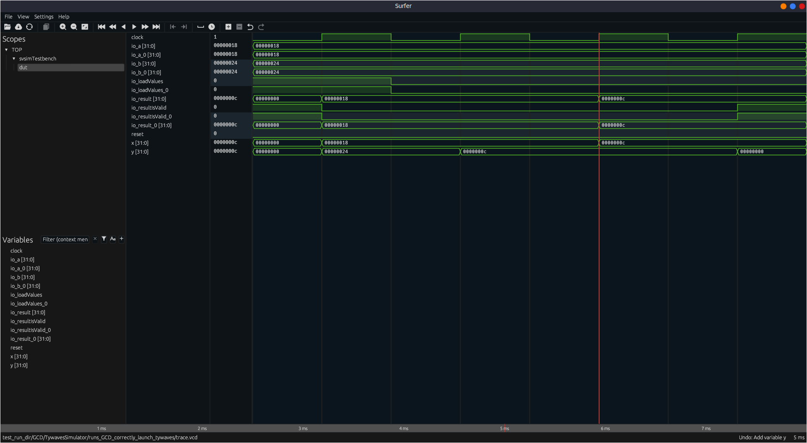
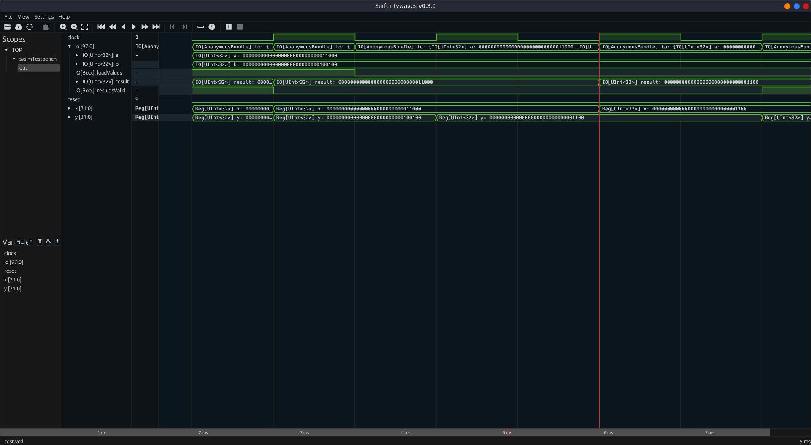

Tywaves project: a type based waveform viewer for Chisel and Tydi-Chisel
This repository contains a summary of the Tywaves project and an API to easily use it for testing a Chisel project. Tywaves consists of implementing a new type based waveform viewer for Chisel and Tydi-Chisel circuits.
The full project aims to successfully display waveforms of a Chisel circuit while maintaining the source code structure, constructs, hierarchies and source language type information (the Scala data type and constructor parameters) of signals and modules.
To achieve this goal, the project:
- collects high-level debug information (DI) of a circuit;
- elaborates the DI in order to associate it with the values in a trace from a simulator, in other words an association with the signals and modules output of a chisel-CIRCT compilation;
- emits a well-defined file format that a viewer can read together with a trace file to properly display the waveforms;
- makes everything compatible and portable with the new ChiselSim.

If you are interested in using the tool and have any feedback on its implementation,
please open an issue or contact me.
Internal functionality
The internal structure of the Tywaves project, how it works and details about the work done can be found in the wiki pages.
Note: The Tywaves project is currently under development. For now, the new functionality in
chisel,firtoolandsurferis available in my forks of the repositories. Pull-requests have been issued to the official repositories This would allow the Tywaves project to have a better integration and availability directly in the official releases.
Table of contents
- Tywaves project: a type based waveform viewer for Chisel and Tydi-Chisel
- Internal functionality
- Table of contents
- Getting started
- Usage in a project through the Tywaves-Chisel-API
- Features
- Versioning and tools (ref)
- Publications
- License
Getting started
Prerequisites
The full project depends on the following tools. To install them, please check the links below:
- Make
- Scala and sbt and scala-cli (Note: Java versions prior to Java 11, tywaves may not work correctly)
- Rust
opensslfor installing the waveform gui (instructions)- Verilator (recommended
v4.228+)
Installation
The Makefile contains all the necessary commands to install the tools and the Tywaves-Chisel-API library.
You can run make all to install everything in one go, or you can install the components separately.
Install surfer-tywaves
To install the latest release of the fork:
or install the development version:
Download and install the forks of Chisel and Firtool
make install-chisel-fork
make install-firtool-fork-bin # Download the Linux precompiled version (too long to compile)
If you want to compile the firtool from source, you can check
the instructions, once cloned the
correct version.
Install and publish locally this library: Tywaves-Chisel-API
Once published locally, you can use it in your project by adding the following line to your build.sbt file:
Usage in a project through the Tywaves-Chisel-API
The Tywaves-Chisel-API is a library that allows to easily enable the Tywaves in a Chisel project. It provides 2
high-level simulators with functionalities to simulate a circuit
through svsim, emit VCD traces and generate a symbol table
for the surfer-tywaves waveform viewer itself automatically:
- ParametricSimulator: provides some generic features such as VCD trace emission, name the trace file, pass additional arguments to firtool before simulation, save the workspace of svsim.1
- TywavesSimulator: it extends the parametric simulator in order to generate extra debug information and optionally launch the waveform viewer directly after the simulation.
Their usage is very similar to ChiselTest
and EphemeralSimulator since they both
implement the PeekPokeAPI, but they use the new official ChiselSim, and they offer additional features compared to
EphemeralSimulator. A simulation can be run as follows:
// Import the simulator
import tywaves.simulator.simulatorSettings._
import tywaves.simulator.ParametricSimulator._
//import tywaves.simulator.TywavesSimulator._
simulate(
new DUT(), // The module to simulate
settings = Seq(/* List of simulator settings */),
simName = "Name_of_the_simulation", // used to name the directory in test_run_dir
) {
dut => // Body of the simulation using the PeekPokeAPI
}
List of available settings of the simulators
A simulation can be customized by passing some settings to the simulator. The following options can be specified
for ParametricSimulator and / or TywavesSimulator classes using the following syntax:
| Setting | Description | Simulator |
|---|---|---|
VcdTrace |
Enable the VCD output optimizing out signals starting with an underscore (_) in the final verilog | ParametricSimulator and TywavesSimulator |
VcdTraceWithUnderscore |
Enable the VCD output (including "underscored" signals) | ParametricSimulator and TywavesSimulator |
SaveWorkdir |
Save the workdir of svsim |
ParametricSimulator and TywavesSimulator |
SaveWorkdirFile(name: String) |
Save the workdir with a specific name | ParametricSimulator and TywavesSimulator |
NameTrace(name: String) |
Give a name to the VCD trace | ParametricSimulator and TywavesSimulator |
WithFirtoolArgs(args: Seq[String]) |
Pass arguments to firtool under the simulation |
TywavesSimulator |
WithTywavesWaveforms(runWaves: Boolean) |
Enable the generation of extra debug information (to fully exploit the tywaves project) and (optionally runWaves=true) launch the waveform viewer directly once the simulation has been completed |
ParametricSimulator and TywavesSimulator |
WithTywavesWaveformsGo(runWaves: Boolean) |
Same as WithTywavesWaveforms but without blocking sbt if runWaves is true |
TywavesSimulator |
Note: please open an issue/PR to request new settings.
Run a quick simple example
To run a quick example you can try to run the examples in the examples folder.
cd example
# Run the gcd example
scala-cli test gcd.test.scala
# Run a Tydi-Chisel example
scala-cli test tydi-chisel.test.scala
The following images show the classic and tywaves waveform visualization of the GCD module.
/** A simple module useful for testing Chisel generation and testing */
class GCD extends Module {
val io = IO(new Bundle {
val a = Input(UInt(32.W))
val b = Input(UInt(32.W))
val loadValues = Input(Bool())
val result = Output(UInt(32.W))
val resultIsValid = Output(Bool())
})
val x = Reg(UInt(32.W))
val y = Reg(UInt(32.W))
when(x > y)(x := x -% y).otherwise(y := y -% x)
when(io.loadValues) {
x := io.a
y := io.b
}
io.result := x
io.resultIsValid := y === 0.U
}
| Only VCD loaded | Tywaves |
|---|---|
|  |  |
Real use case scenario: debugging ChiselWatt
If you are interested to see Tywaves working in an existing Chisel design, you can refer to this section. This example has been used in the official publication to assess Tywaves.
Features
The following list shows a summary of the features added by the Tywaves project to Chisel/CIRCT and Surfer:
- Parse and map Chisel/FIRRTL/Verilog circuits
- Emit VCD traces from the simulator (both with and without underscores in the signal names)
- Automatic debug information generation (from Chisel through CIRCT to the waveform viewer)
- Dump Chisel types
- Dump constructor parameters in the final symbol table
- Distinguish IO, Reg and wires
- Chisel data types representation (basic):
- Hierarchical structures of bundles
- Vectors
- Enums
- Hierarchical modules (modules with children)
- Generic submodules (all different types of modules)
- Variants of the same module (i.e. parametric module)
- Instances of the same module
- Chisel data types representation (advanced):
- Type visualization for module instances (scopes in the waveform viewer)
- Constructor parameters for both signals and modules
- Selectable signal value rendering (with type information attached)
- Automatic/custom signal value rendering
- For loops code generation
- Temporary values (also inside
whenandotherwiseblocks)
Future work
- Internals
- Use intrinsics as a communication method to propagate type information between Chisel and CIRCT instead of FIRRTL annotations. Annotations are used temporarily and need to be replaced with a mechanism more suitable for MLIR operations. This change should enable the acceptance of PRs in the official repositories.
- Create a new debug file format independent of HGLDD that is free from the code patterns and limitations of VCS internals. HGLDD is built using some internal VCS names and methods that overcomplicate the format in general cases.
- Performance
- Profiling and performance overhead
- Remove the VCD rewriter step to improve the performance of
tywaves-rsand Surfer. - Parallelize the
TyVcdBuilderto further improve the performance of the viewer. - Feature Extensions
- Extend and test the infrastructure of Tywaves to support other languages integrated into CIRCT.
- Enable type information for module instances in the viewer UI.
- Enable to save the state of the viewer. This feature should allow to save the appearance of waveforms onto a state file.
- Automatically choose how to render a value based on the type name: either based on the name of the type or by defining an API that allows users to define how to render a value, similar to a
toString()method. - Enable switching between multiple IRs in the viewer dynamically (i.e., Chisel, FIRRTL, Verilog).
- Introduce a new specific visualization for hardware streaming interfaces (i.e., providing a new abstract view like showing deserializing a whole message received). This would work for Tydi but also for other streaming protocols if a standard interface for visualization is provided.
Versioning and tools (ref)
Use the new name of the library in your sbt dependencies: com.github.rameloni::tywaves-chisel-api:<version>.
IMPORTANT NOTE: Always use the latest version of Tywaves
| Release | Chisel fork version (from rameloni/chisel) |
Firtool fork version (from rameloni/circt) |
Tywaves-rs version | Surfer-tywaves version |
|---|---|---|---|---|
| 0.4.2-SNAPSHOT | v6.4.3-tywaves-SNAPSHOT | v0.1.5 | v0.1.4 | v0.3.2-tywaves-dev-SNAPSHOT |
| 0.4.1-SNAPSHOT | v6.4.3-tywaves-SNAPSHOT | v0.1.4 | v0.1.4 | v0.3.2-tywaves-dev-SNAPSHOT |
| 0.4.0-SNAPSHOT | v6.4.3-tywaves-SNAPSHOT | v0.1.3 | v0.1.4 | v0.3.2-tywaves-dev-SNAPSHOT |
| 0.3.0-SNAPSHOT | v6.4.2-tywaves-SNAPSHOT | v0.1.1 | v0.1.1 | v0.3.0-tywaves-dev-SNAPSHOT |
Old backend implementations (ref)
Use the old name of the library in your sbt dependencies: com.github.rameloni::tywaves-demo-backend:<version>.
| Release | Chisel fork version (from rameloni/chisel) |
Firtool version (official CIRCT repo) | Tywaves-rs version | Surfer-tywaves version |
|---|---|---|---|---|
| 0.2.1-SNAPSHOT | v6.1.0-tywaves-SNAPSHOT | v1.75.0 | v0.1.0 | v0.2.1-tywaves-dev-SNAPSHOT |
| 0.2.0-SNAPSHOT | v6.1.0-tywaves-SNAPSHOT | v1.75.0 | - | v0.2.0-tywaves-dev-SNAPSHOT |
| 0.1.1-SNAPSHOT | v6.1.0-tywaves-SNAPSHOT | v1.75.0 | - | v0.1.1-SNAPSHOT |
| 0.1.0-SNAPSHOT | v6.1.0 official repo | v1.62.0 | - | v0.1.0-SNAPSHOT |
Publications
The paper on Tywaves has been submitted for publication NorCAS 2024. It is currently available at https://arxiv.org/abs/2408.10082. If you like Tywaves, you can cite this work using the following BibTex entry:
@unpublished{meloni2024tywavestypedwaveformviewer,
title={{Tywaves: A Typed Waveform Viewer for Chisel}},
author={Raffaele Meloni and H. Peter Hofstee and Zaid Al-Ars},
year={2024},
eprint={2408.10082},
archivePrefix={arXiv},
primaryClass={cs.AR},
url={https://arxiv.org/abs/2408.10082},
note={Submitted for publication}
}
The BibTex entry will be updated when the paper will be officially published.
For more details about the original work and the justification behind design choices, please refer to the respective MSc thesis:
Raffaele Meloni. Tywaves: A Typed Waveform Viewer for Chisel HDL with Typed Circuit Components and Tydi Streams. MSc thesis, TU Delft, Aug. 2024. Available: https://repository.tudelft.nl/record/uuid:829f43e0-1c34-4624-8c33-5182b71bd027.
License
Tywaves is licensed under the Apache License 2.0. Please see LICENSE for details.
-
While
TywavesSimulatoris a central part of the Tywaves project, theParametricSimulatoris able to simulate any Chisel circuit independently from Tywaves. In case you need to simulate a circuit without a "Chisel" representation, you can useParametricSimulatorto emit a VCD trace. If you want to try the functionalities ofTywavesthenTywavesSimulatoris the right choice. ↩